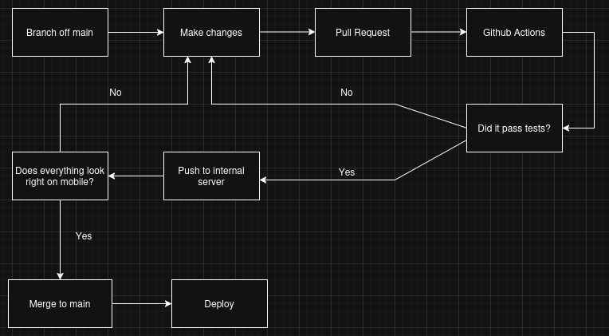

Creating a CI/CD pipeline for this Website
Intro
As I kept adding projects to my portfolio and thus expanding this website, it was starting to get a bit overwhelming to manually check that every link worked, and that the pages looked good on both mobile and PC. Not to mention the fact that I didn't have an intermediate step between commiting to a change and that change reflecting on the live website.
So, I was suddenly aware of the lack of an actual development pipeline... But, every problem is an opportunity to learn, an experienced DevOps Engineer suggested I use GitHub Actions to set up a CI/CD pipeline to streamline the process.
Planning
Before this, I am not afraid to admit that my development pipeline consisted of:
- Make changes to the website
- Run it locally on my machine
- Push it to the repository
- Pray that the pages look fine on mobile
And this was all exclusively on the main branch...
It was inadequate to say the least. At its best, it was a poorly thought-out,
disorganised process, and at worst, I was displaying half-baked, broken or
even unresponsive webpages to potential employers.
So I came up with this workflow:

This diagram shows the workflow from development to deployment. Changes are validated through automated tests before being deployed, then sent to a local staging server, where I can ensure reliability on multiple devices before reaching production.
Since I am using GitHub pages, the deploying bit is already taken care of. So the next steps are to:
- Setup testing environment on my local server
- Setup tests to run every time there is a change
- Automate pushing of changes to a local server
Tests
For a simple website such as this, there are a couple of tests that would be a good idea to run.
HTML validator
https://github.com/marketplace/actions/html5-validatorhtml5validator is a command line tool that tests files for HTML5 validity.
Running it in this pipeline ensures that HTML is automatically checked for
errors before deployment.
It helps catch issues like invalid tags
or incorrect structure early, improving browser compatibility,
and overall code quality.
Link Checker
https://github.com/marketplace/actions/lychee-broken-link-checkerLychee automatically checks for broken links across the website. This helps ensure that all internal and external links remain valid, preventing users from encountering dead pages and maintaining reliability.
Other tests could be linters for CSS or JS, but I didn't deem it necessary for my case, since I have no plans to work on JavaScript, and the CSS file rarely gets modified.
Setting up the Internal Server
If you have seen the SysOps section of this website, you'll know I own an Ubuntu Server which I connect to using ssh.
To ensure the new webpages displayed correctly on other devices other than the one I'm coding with, I use this machine to serve the version of the website I am currently working on, but it is available only on my local network.
The software I've chosen to host this test webpage with is Nginx, for no particular reason other than I was already familiar with it.
The process was not particularly straightforward.
Nginx's system is based on two folders usually located in etc/nginx/{sites-available, sites-enabled}
In sites-available folder, you must create a configuration file, which then should be symlinked to the sites-enabled folder, if an available site is NOT symlinked in the sites-enabled folder, it will not be run..
Internal Server Workflow
Now that the machine is able and ready to host the webpage, the next step is to have a way to pull from the repository as and when it's needed.
Conveniently, there is a GitHub action that can be used for this purpose.
rsync
https://github.com/marketplace/actions/rsync-deployments-actionrsync (remote sync) is a fast and efficient file transfer tool used to synchronize files between two locations. In this case, the GitHub repository and my internal server.
Unlike a simple copy operation, rsync only transfers the differences between files. This means that instead of re-uploading the entire website every time a change is made, it will only update the files that were modified. This makes deployments significantly faster and reduces unnecessary network usage.
In this pipeline, rsync is used to automatically push the latest version of the website from the repository to the internal server whenever changes are made. It connects over SSH, copies updated files, and ensures the server always reflects the most recent state of the project.
Chroot jail
Since handing ssh access to github actions would mean exposing the entire machine to a service I do not personally manage, I followed this guide: https://www.tecmint.com/restrict-ssh-user-to-directory-using-chrooted-jail/ which explains how to restrict ssh users to a specific directory and commands. The important difference between this guide and what I did, was the addition of the /bin/rsync files, as the github action requires it.
cp --parents `ldd <BIN_PATH> | cut -d " " -f 3` <CHROOT_PATH>This is a helpful command to copy library dependencies for the chroot, but it’s best to use caution and double-check every instance. The user specified in this chroot will also be the user specified in the Github Secrets, thus the user that will be used by rsync
This setup ensures that the deployment user is confined to a restricted environment, reducing the impact of potential security breaches.
Workflow
This is the finalised YAML file.
name: Pull Request tests
on:
pull_request:
types:
- opened
- synchronize
- reopened
jobs:
build:
name: "HTML validation"
runs-on: ubuntu-latest
steps:
- uses: actions/checkout@v2
- name: Checks HTML5
uses: Cyb3r-Jak3/html5validator-action@master
with:
root: .
blacklist: partials
css: true
format: text
link-checker:
name: "Link Checker"
runs-on: ubuntu-latest
steps:
- uses: actions/checkout@v2
- name: Check links
uses: lycheeverse/lychee-action@v2
with:
args: . --exclude-path partials/
deploy-to-server:
runs-on: ubuntu-latest
steps:
- uses: actions/checkout@v6
- name: rsync deployments
uses: burnett01/rsync-deployments@v8
with:
switches: -avzr --delete
path: .
remote_path: ${{ secrets.REMOTE_PATH }}
remote_host: ${{ secrets.REMOTE_HOST }}
remote_port: ${{ secrets.REMOTE_PORT }}
remote_user: ${{ secrets.REMOTE_USER }}
remote_key: ${{ secrets.REMOTE_PRIVATE_KEY }}All changes are made through feature branches and submitted via pull requests. This ensures that validation checks are always performed before merging into the main branch.
This workflow is triggered on pull requests and consists of three stages:
- Validation: HTML is checked for correctness
- Link checking: Ensures no broken links exist
- Staging: Uses rsync to update the internal server
Deployment is handled by GitHub pages automatically, once the pull request is validated
Conclusion
This project transformed a manual and error-prone workflow into a structured, automated pipeline. It improved reliability, reduced deployment risk, and taught me best practices that can scale to larger projects.
- Automated validation of HTML and links on every pull request
- Eliminated broken pages reaching production
- Reduced deployment time through incremental updates (rsync)
- Introduced a safe testing environment before public release